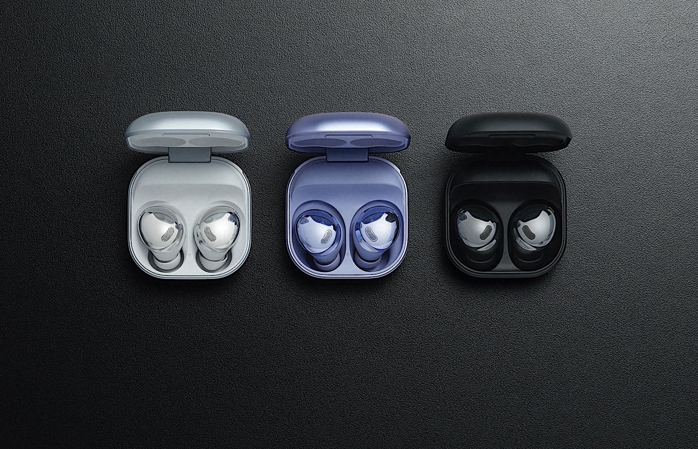

SOUND

Your favorite music.
Our take on it.
Take your music experiance to the next level , value your sound quality and feel sund like never before.

The Samsung Galaxy Buds Pro offers very good audio output. There's a notable boost in bass range sound, and a spike in the very high range, but otherwise everything should sound pretty much like it's supposed to. View specifications.
These are true wireless earbuds, with pro-grade technology for immersive sound like never before. While Intelligent ANC lets you seamlessly switch between noise canceling and fully adjustable ambient sound. So let the outside in - or keep it out. It's your world.Galaxy Buds Pro let you hear the best of it. See product Website
Your favorite music.
Our take on it.
Take your music experiance to the next level , value your sound quality and feel sund like never before.
Talk anywere
talk no matter
without caring
Now with the new and improved microphone talking has never been easier. Talk to your friends and family like never before with clearer sound and better quality for them too.
The first
Galaxy Buds with
new and improved padding
The new and improved padding is coming to the earbuds now to change the comfort game forever.So lightweight you wont know you are wearing them
Go all day and
supercharge your
night
Work, play and do your thing from one day into the next with the bigger battery yet to be included in such tiny earphones.
| Dimensions | 20.5 x 19.5 x 20.8 mm |
| Weights | 6.3g |
| Build | Latex earcups |
| Copper made speaker | |
| Aluminium body | |
| IPX7 water and dust resistance | |
| Premium plastic case | |
| Speaker | 2 way (11mm Woofer & 6.5mm Tweeter) |
| Mic | Main Mic (High SNR), Sub Mic, Inner Mic |
| Mic mesh | chamber for minimizing wind noise |
| Bluetooth | 5.0 |
| BT Profile | HFP, A2DP, AVRCP |
| Codec | Scalable (Samsung proprietary) |
| Codec type | AAC, SBC |
| Play time | 5h / TTL 18h (ANC ON) |
| 8h / TTL 28h (ANC OFF) | |
| *Bixby voice wake-up OFF | |
| *All times are approximently | |
| Talk time | 4h / TTL 14.5h - 5h / TTL 17.5h |
| Super Quick charging | 30min play / 3min charging |
| Quick charging | 60min play / 5min charging - 85min play / 10min charging |
| Android | Devices running Android 7.0 or higher |
| Convenience | Auto Switch |
| Bixby voice wake-up | |
| Voice Detect |
Total Rating:
Rating:
I honestly had my doubts not gonna lie.They were expensive they were a lot of other options but honest to god i love them. Working out haw never been easier, i catch myself taking to the phone just for the fun of it. I cant stop listening to music... and they are so comfy i honestly sleep with them. The only downside is that maybe with so much talikng time the bill may come a little be overpriced!
Rating:
After owning and still using the first generation galaxy buds I wanted to see what an upgrade would do. Decided to wait after the 2nd generation, I had purchased the "beans" when they had first came out and to my disappointment and my opinion did not live up to even the 1st generation buds because of the change of shape of the buds and did not even support ambient features like the previous 2 models before so after some exercises and 2 days later ended up returning them and continued to wait for the next gen buds. I had purchased these bad boys and to my surprise had everything I was looking for and more and was happy that they went for a sleeker and same look as the buds before the beans. Another thing worth mentioning and what sold me is when I found out about what the buds do automatically as soon as someone outside talks to you or even as soon as it hears your voice it pauses whatever you're listening to and goes into the ambient mode so you can hear the outside world without having to touch anything or even take them out of your ears and then 10 seconds later when the buds don't hear any voices anymore goes back to playing music and drowns everything out completely so it's perfect serenity with only you and whatever you're listening to.
Rating:
I love these ear buds.... mostly. I love the talk quality (my #1 priority). It's top notch, absolutely wonderful. Listening quality, absolutely wonderful. But the part that actually goes in your ear, trash, trash and really trash. Please improve this. You can make a foam to better and cheaper than anyone else. Make it fit most ears please. Other than that, 8.5 out of 10.
Rating:
I like these earbuds but i hate the call sound quality cause my voice will be breaking down while im talking with my earbuds! It really is a shame to spend so much money and get nothing in return , i feel like they] just stole my money and had a good laugh at it !!
Rating:
I love these headphones. I use headphones all the time when working out when doing yard work and when working. When i am working out and doing yard work i sweat alot and i have burned through othe headphones like crazy. But these ones do really good. Havnt had a problem with them yet. I alos really like that you can switch between ambient noise and then noise canceling. Makes it great for whatever and wherever i am at.